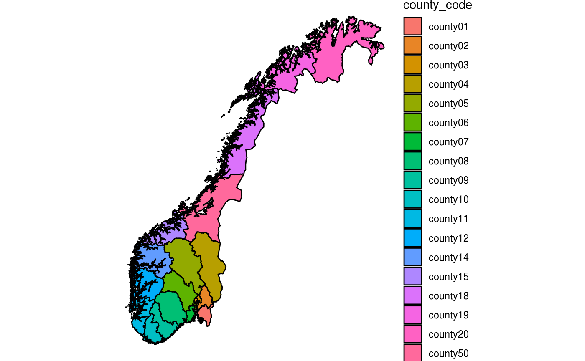

Datasets.RmdThere are four datasets available:
Some of these datasets (norway_population, norway_locations, and norway_locations_long) have the option to display the data using municipality codes as they were originally or as they are today (after the merging of municipalities).
There are two ways to obtain the data, either by specifying the entire dataset’s name (dataset_current or dataset_original) or by using the argument is_current_municips.
fhidata::get_data("norway_population", is_current_municips=TRUE)
#> year location_code level age pop imputed
#> 1: 2006 county01 County 0 2757 FALSE
#> 2: 2006 county01 County 1 2956 FALSE
#> 3: 2006 county01 County 2 3007 FALSE
#> 4: 2006 county01 County 3 3119 FALSE
#> 5: 2006 county01 County 4 3128 FALSE
#> ---
#> 747932: 2021 norway National 101 288 TRUE
#> 747933: 2021 norway National 102 130 TRUE
#> 747934: 2021 norway National 103 100 TRUE
#> 747935: 2021 norway National 104 53 TRUE
#> 747936: 2021 norway National 105 68 TRUE
fhidata::get_data("norway_population_current")
#> year location_code level age pop imputed
#> 1: 2006 county01 County 0 2757 FALSE
#> 2: 2006 county01 County 1 2956 FALSE
#> 3: 2006 county01 County 2 3007 FALSE
#> 4: 2006 county01 County 3 3119 FALSE
#> 5: 2006 county01 County 4 3128 FALSE
#> ---
#> 747932: 2021 norway National 101 288 TRUE
#> 747933: 2021 norway National 102 130 TRUE
#> 747934: 2021 norway National 103 100 TRUE
#> 747935: 2021 norway National 104 53 TRUE
#> 747936: 2021 norway National 105 68 TRUE
fhidata::get_data("norway_population", is_current_municips=FALSE)
#> year location_code level age pop imputed
#> 1: 2005 county01 County 0 2838 FALSE
#> 2: 2005 county01 County 1 2919 FALSE
#> 3: 2005 county01 County 2 3073 FALSE
#> 4: 2005 county01 County 3 3098 FALSE
#> 5: 2005 county01 County 4 3239 FALSE
#> ---
#> 886792: 2021 norway National 101 288 TRUE
#> 886793: 2021 norway National 102 130 TRUE
#> 886794: 2021 norway National 103 100 TRUE
#> 886795: 2021 norway National 104 53 TRUE
#> 886796: 2021 norway National 105 68 TRUE
fhidata::get_data("norway_population_original")
#> year location_code level age pop imputed
#> 1: 2005 county01 County 0 2838 FALSE
#> 2: 2005 county01 County 1 2919 FALSE
#> 3: 2005 county01 County 2 3073 FALSE
#> 4: 2005 county01 County 3 3098 FALSE
#> 5: 2005 county01 County 4 3239 FALSE
#> ---
#> 886792: 2021 norway National 101 288 TRUE
#> 886793: 2021 norway National 102 130 TRUE
#> 886794: 2021 norway National 103 100 TRUE
#> 886795: 2021 norway National 104 53 TRUE
#> 886796: 2021 norway National 105 68 TRUEHere we can see the current available datasets:
fhidata::get_data("norway_population", is_current_municips=TRUE)
#> year location_code level age pop imputed
#> 1: 2006 county01 County 0 2757 FALSE
#> 2: 2006 county01 County 1 2956 FALSE
#> 3: 2006 county01 County 2 3007 FALSE
#> 4: 2006 county01 County 3 3119 FALSE
#> 5: 2006 county01 County 4 3128 FALSE
#> ---
#> 747932: 2021 norway National 101 288 TRUE
#> 747933: 2021 norway National 102 130 TRUE
#> 747934: 2021 norway National 103 100 TRUE
#> 747935: 2021 norway National 104 53 TRUE
#> 747936: 2021 norway National 105 68 TRUE
fhidata::get_data("norway_locations", is_current_municips=TRUE)
#> municip_code municip_name county_code county_name
#> 1: municip0101 Halden county01 Østfold
#> 2: municip0104 Moss county01 Østfold
#> 3: municip0105 Sarpsborg county01 Østfold
#> 4: municip0106 Fredrikstad county01 Østfold
#> 5: municip0111 Hvaler county01 Østfold
#> ---
#> 418: municip5054 Indre-Fosen county50 Trøndelag
#> 419: municip0715 Holmestrand county07 Vestfold
#> 420: municip0729 Færder county07 Vestfold
#> 421: municip0712 Larvik county07 Vestfold
#> 422: municip5061 Rindal county50 Trøndelag
fhidata::get_data("norway_locations_long", is_current_municips=TRUE)
#> location_code location_name
#> 1: norway Norway
#> 2: norge Norge
#> 3: municip0101 Halden
#> 4: municip0104 Moss
#> 5: municip0105 Sarpsborg
#> ---
#> 438: county15 Møre-og-Romsdal
#> 439: county18 Nordland
#> 440: county19 Troms
#> 441: county20 Finnmark-Finnmarku
#> 442: county50 Trøndelag
fhidata::get_data("norway_municip_merging")
#> municip_code_current municip_code_original year municip_name
#> 1: municip0101 municip0101 2006 Halden
#> 2: municip0101 municip0101 2007 Halden
#> 3: municip0101 municip0101 2008 Halden
#> 4: municip0101 municip0101 2009 Halden
#> 5: municip0101 municip0101 2010 Halden
#> ---
#> 6833: municip5061 municip1567 2017 Rindal
#> 6834: municip5061 municip1567 2018 Rindal
#> 6835: municip5061 municip5061 2019 Rindal
#> 6836: municip5061 municip5061 2020 Rindal
#> 6837: municip5061 municip5061 2021 Rindal
#> county_code county_name region_code region_name
#> 1: county01 Østfold region5 Eastern Norway
#> 2: county01 Østfold region5 Eastern Norway
#> 3: county01 Østfold region5 Eastern Norway
#> 4: county01 Østfold region5 Eastern Norway
#> 5: county01 Østfold region5 Eastern Norway
#> ---
#> 6833: county50 Trøndelag region2 Trøndelag
#> 6834: county50 Trøndelag region2 Trøndelag
#> 6835: county50 Trøndelag region2 Trøndelag
#> 6836: county50 Trøndelag region2 Trøndelag
#> 6837: county50 Trøndelag region2 Trøndelaglibrary(ggplot2)
library(data.table)
pd <- fhidata::get_data("norway_map_counties")
q <- ggplot()
q <- q + geom_polygon(data = pd, aes( x = long, y = lat, group = group, fill=location_code), color="black")
q <- q + theme_void()
q <- q + coord_quickmap()
q